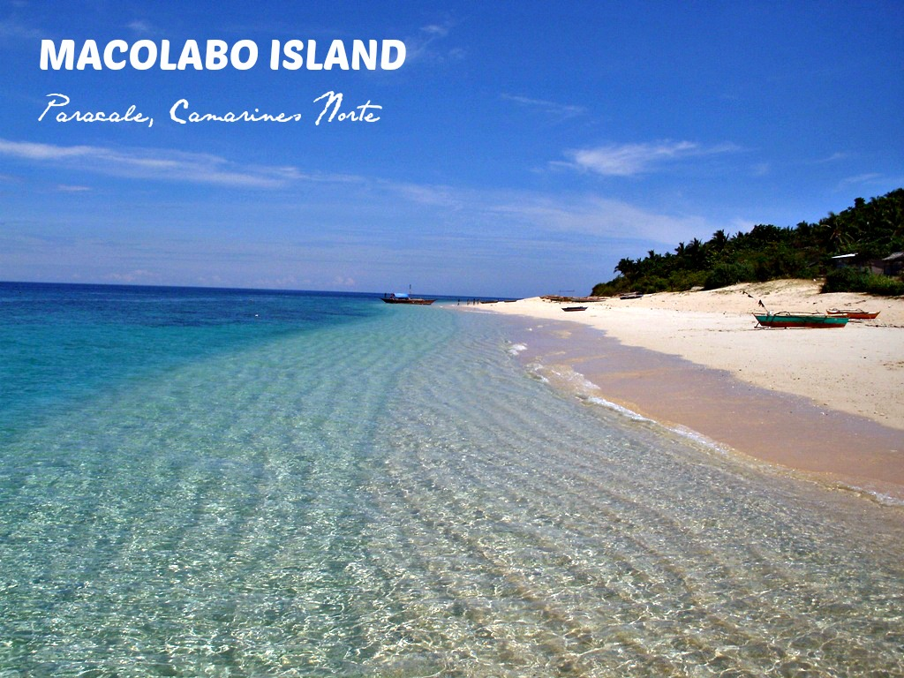
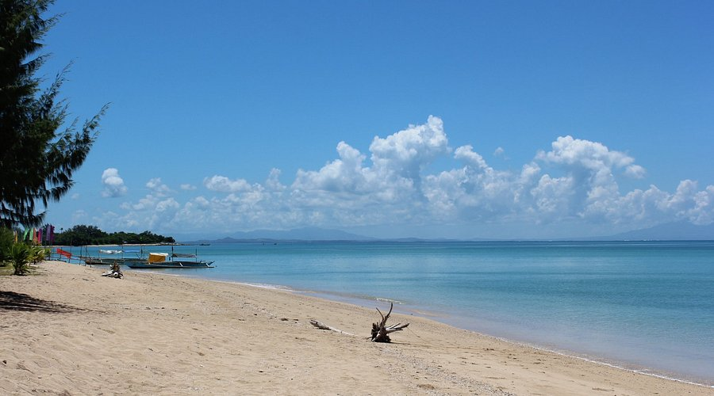

Beach Destinations

Bagasbas Beach
A famous surfing beach in Daet with consistent waves. The beach is wide and long, making it great for long walks and water sports.
Read More →
Calaguas Island
A group of islands in Mercedes, Camarines Norte with white sand beaches and crystal clear water. One of the hidden gems of the Philippines.
Read More →
Maculabo Island
A small island near Mercedes with calm waters, coconut trees, and a quiet atmosphere. Perfect for day trips and picnics.
Read More →
Apuao Grande Island
Part of the Calaguas group, this island has fine white sand and is surrounded by coral reefs. Good for snorkeling and swimming.
Read More →Beach Comparison
| Beach | Sand Type | Best For | Accessibility |
|---|---|---|---|
| Bagasbas Beach | Dark/Gray sand | Surfing, beach activities | Very easy, near Daet town |
| Calaguas Island | White sand | Relaxing, camping, swimming | Requires boat ride from Mercedes |
| Maculabo Island | White sand | Picnics, day trips | Short boat ride from Mercedes |
| Apuao Grande | White powdery sand | Snorkeling, swimming | Boat ride needed |